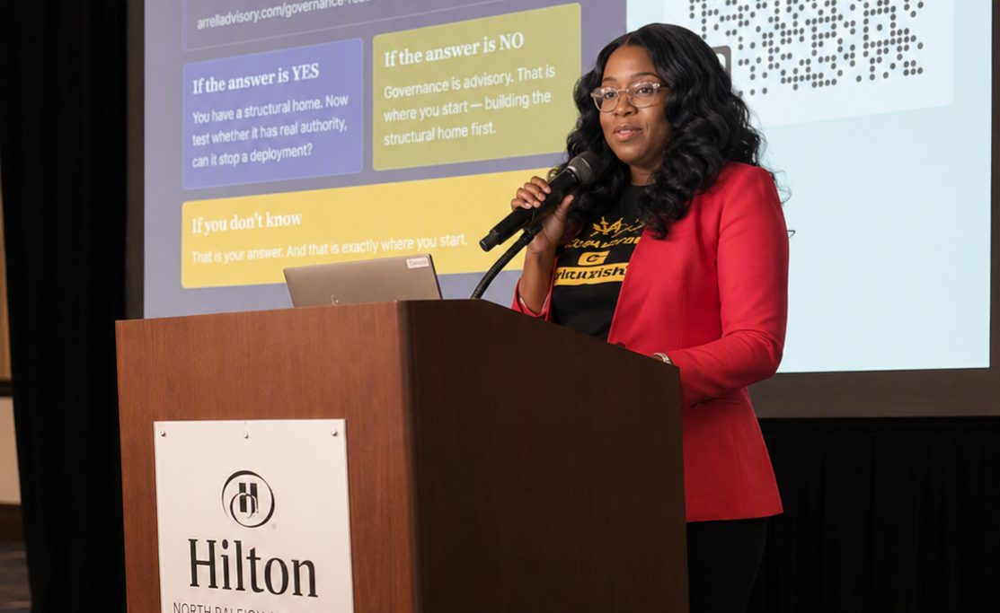

Know Where AI Creates Value.
Build the Capability to Act.
Executive briefings, hands-on workshops, workforce training, and keynotes with Dr. Gbemisola Adetayo. Help your leaders and teams connect AI opportunities to business priorities, improve how work gets done, and use AI responsibly.
Organizational learning grounded in real decisions.
Dr. Gbemisola Adetayo brings Arrell Advisory’s work in AI strategy, organizational readiness, workflow transformation, and governance into the learning room. Sessions connect the business problem, the people doing the work, and the decisions that make responsible adoption possible. Explore examples of previous engagements below.
Start with the work your organization needs to improve.
Where is work slowing down? Which tasks consume capacity? Where could better information improve a decision? These questions give AI learning a purpose. We help participants examine their work, assess where AI may help, and define what a useful result would look like.
Practical skills and responsible use develop together. Participants explore how to give AI relevant context, evaluate outputs, protect sensitive information, and decide when human review or escalation is required. Leaders consider the readiness, ownership, and measures needed to carry learning into everyday practice.
Match the learning to the decisions your people need to make.
Scope, depth, and examples are agreed around your audience, current readiness, and business priorities.
AI Strategy & Leadership Readiness
For boards, executive teams, and business owners evaluating what AI means for their organization. Build a shared understanding of capabilities, limitations, strategic opportunities, and adoption requirements.
Focus: priority questions, readiness gaps, and decisions that need leadership ownership.
Discuss an Executive Briefing ↗AI Value & Workflow Adoption
For leaders and teams with a recurring workflow to examine. Map the work, assess opportunities for augmentation or automation, and consider data, review points, and human decision authority.
Focus: a candidate opportunity, a bounded scope, and measures to evaluate a next step.
Plan an Adoption Workshop ↗AI Literacy & Practical Capability
For teams building the skills to use AI in their roles. Develop practical approaches to prompting, context, output evaluation, information handling, and responsible use through relevant examples and exercises.
Focus: repeatable working practices and clear expectations for review and accountability.
Discuss Workforce Training ↗AI Transformation & the Future of Work
For conferences, associations, chambers of commerce, and organizational events. Give your audience a clear perspective on AI-driven change and the organizational capabilities needed to respond.
Focus: shared understanding, practical questions, and a direction for further action.
Enquire About a Keynote ↗Topics connected to organizational priorities.
Select a focus that fits your audience. We shape the session around their roles, experience, and the work they need to do.
Define what participants should be able to do next.
Learning objectives are agreed for each engagement. Depending on the selected format and scope, participants work toward the following capabilities.
Explain where AI can help in their work and where its limitations require caution.
Assess a workflow opportunity against business value, feasibility, and readiness.
Give AI useful context and evaluate outputs against a clear review standard.
Identify data boundaries, human review points, and accountable decision owners.
Choose a bounded next step with a useful success measure.
Identify the skills, support, and governance needed to sustain adoption.